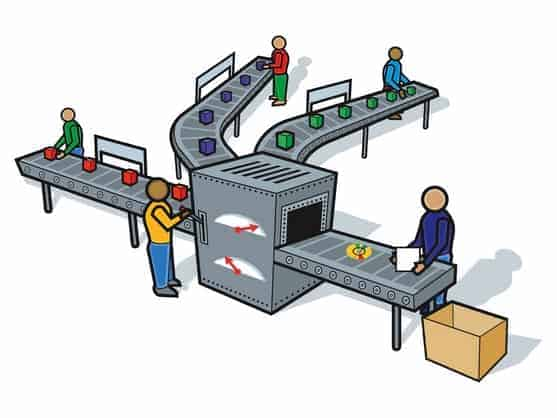

Desde el punto de vista de la economía, la producción es la actividad que aporta valor agregado por creación y suministro de bienes y servicios, es decir, consiste en la creación de productos o servicios y, al mismo tiempo, la creación de valor. También por producción, en un sentido amplio, entendemos el incorporar utilidades nuevas a las cosas, no solamente la generación de producto con cualidades distintas a su origen, es decir, modificaciones a su estructura natural del factor que le otorga un nuevo uso. Es la actividad que se desarrolla dentro de un sistema económico
